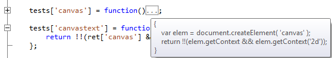
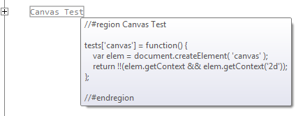

SharpDevelop 4.2 now includes support for JavaScript code folding and code regions.
When you open a JavaScript (.js) file into the text editor any functions that are defined can be folded.

The text editor also supports code regions.
//#region Canvas Test
tests['canvas'] = function() {
var elem = document.createElement( 'canvas' );
return !!(elem.getContext && elem.getContext('2d'));
};
//#endregion
These regions can be folded as shown below.
